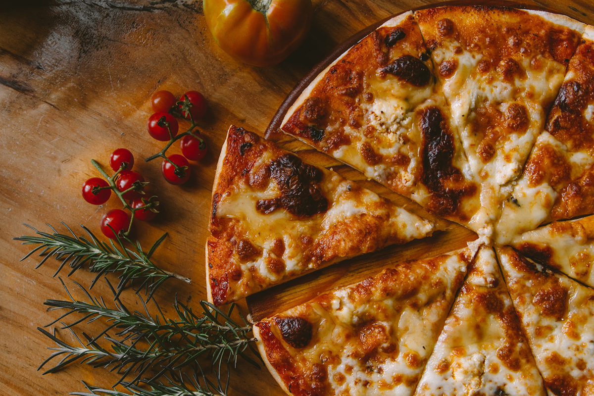

Have you ever made a pizza from scratch?
Yeah, but have you really thought about it?
Like, how if you put the sauce on first, before you make the base it doesn't work?
Or if you put the cheese on then the sauce it's messed up too?
Making a pizza is similar to coding. There are certain things we have to do first. Like making the base, letting it rise, molding the base out, adding the sauce, adding the toppings, adding the cheese, baking, cutting, and serving. Not all pizzas end up the same, but they do start out in the same way as long as you follow the order correctly. You can have everything you need to make many different pizzas using the same base structure that is set up beforehand.
This is how you make a pizza:
- Make the pizza base
- Add the tomato sauce
- Add the toppings
- Add the cheese
- Bake
- Cut
- Serve
The toppings are different, they change for every occasion and taste. There is no order to toppings. So we will list them like this:
- Pepperoni
- Olives
- Peppers (never green)
- Mushrooms
- Onions
- Jalapenos
- Pineapple (only if you are crazy)
- Bacon
Here's the Wikipedia article about pizza.
